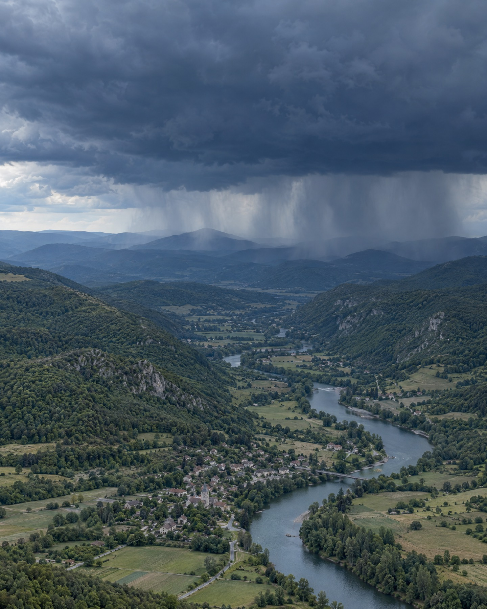

A Forecasting solutions
Act before the water arrives.
DeepWater translates any rainfall forecast into precise, asset-level flood impact. Rainfall to flood impact in seconds — real-time, actionable, anywhere on Earth.
From
“200 mm of rainfall is expected over this city.”
To
- “Evacuate zone B — water depth will exceed 60 cm by 14:00.”
- “High-risk buildings are located at X, Y.”
- “Reroute logistics away from the A3 corridor until tomorrow.”
- “Do not park your car at those locations for the next 18 h.”
- Maximum depth per pixel
- Full dynamic evolution
- Flow direction and origin
- Velocity and duration